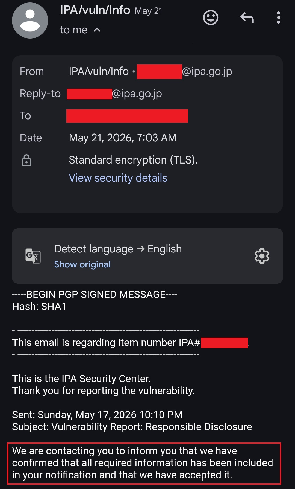

Hello Hackers 👋
I hope you are all doing well and continuing to secure our digital world 🌍🔐.
Today, I would like to share that I have received an acknowledgment from the Government of Japan 🇯🇵 for reporting a security vulnerability on one of their websites.
Recently, I was also acknowledged by the Russian Government 🇷🇺 for responsibly reporting a security issue. While reviewing a Japanese government website, I discovered an information disclosure vulnerability similar to a finding I had previously identified on a Russian government asset.
🔍 The Discovery
During routine security research and testing, I came across an information disclosure issue affecting a Japanese government website.
After carefully validating the finding and ensuring that no unnecessary access or impact occurred, I documented the issue and prepared a responsible disclosure report.
⚠️ Security Impact
Information disclosure vulnerabilities can unintentionally expose internal details that may assist malicious actors in understanding an application's structure or configuration.
While I cannot disclose technical specifics due to ongoing remediation efforts and responsible disclosure obligations, the issue was significant enough to warrant reporting through the appropriate channel.
📩 Responsible Disclosure
Following responsible disclosure practices, I submitted a detailed report to the relevant security contact associated with the affected government website.
The report was reviewed by the responsible team, and I am pleased to share that the Government of Japan acknowledged the submission and confirmed that the vulnerability is currently under triage and remediation.

As both Japan and Russia maintain strict cybersecurity and disclosure policies, I am unable to share any technical details or sensitive information until the vulnerabilities have been fully resolved and public disclosure is permitted.
🏅 Key Takeaways
- 🔍 Information disclosure vulnerabilities should never be overlooked.
- 🛡️ Responsible disclosure helps organizations strengthen their security posture.
- 🌍 Security research can contribute to protecting public-sector infrastructure.
- 📩 Professional communication is essential when reporting vulnerabilities.
- 🚀 Persistence and continuous learning lead to meaningful discoveries.
💡 Advice for Hunters
Always follow responsible disclosure practices and respect the policies of the organizations you engage with.
Even seemingly minor information leaks can have a larger security impact when combined with other weaknesses.
🧠 Final Thoughts
Receiving acknowledgment from the Government of Japan was an honor and another memorable milestone in my cybersecurity journey.
Every responsibly disclosed vulnerability contributes toward making the internet safer for everyone 🌍🔐.
Once disclosure is permitted and remediation is complete, I will be happy to answer questions through my Linktree handles.
Thank You,
MR. X FACTOR
🔗 Handles:
- Linktree: https://linktr.ee/mrxfact0r_99